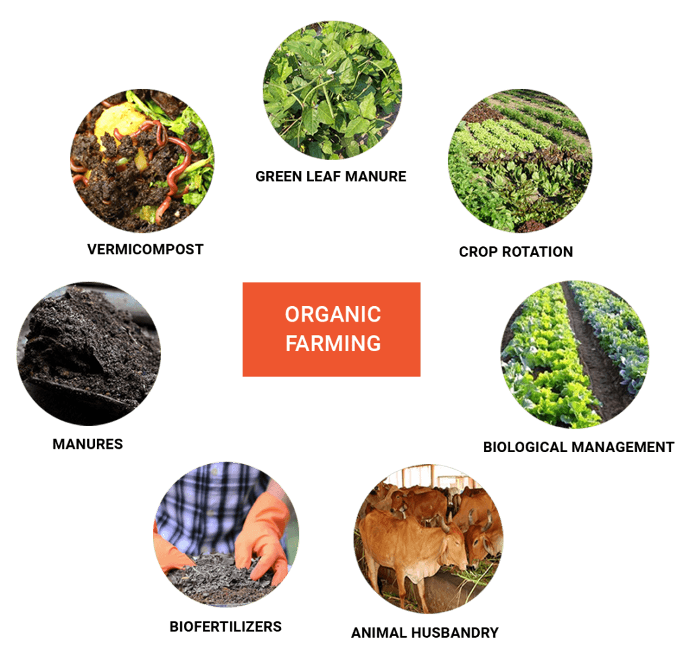

ORGANIC FARMING

ORGANIC FARMING:
organic farming, sustainable agricultural system that uses ecologically based pest controls and biological fertilizers derived largely from animal and plant wastes and nitrogen-fixing cover crops. Modern organic farming was developed as a response to the environmental harm caused by the use of chemical pesticides and synthetic fertilizers in conventional agriculture, and it has numerous ecological benefits.
Compared with conventional agriculture, organic farming uses fewer pesticides, reduces soil erosion, decreases nitrate leaching into groundwater and surface water, and recycles animal wastes back into the farm. These benefits are counterbalanced by higher food costs for consumers and generally lower yields. Indeed, yields of organic crops have been found to be about 25 percent lower overall than conventionally grown crops, although this can vary considerably depending upon the type of crop. The challenge for future organic agriculture will be to maintain its environmental benefits, increase yields, and reduce prices while meeting the challenges of climate change and an increasing world population.
HISTORY:
The concepts of organic agriculture were developed in the early 1900s by Sir Albert Howard, F.H. King, Rudolf Steiner, and others who believed that the use of animal manures (often made into compost), cover crops, crop rotation, and biologically based pest controls resulted in a better farming system. Howard, having worked in India as an agricultural researcher, gained much inspiration from the traditional and sustainable farming practices he encountered there and advocated for their adoption in the West. Such practices were further promoted by various advocates—such as J.I. Rodale and his son Robert, in the 1940s and onward, who published Organic Gardening and Farming magazine and a number of texts on organic farming. The demand for organic food was stimulated in the 1960s by the publication of Silent Spring, by Rachel Carson, which documented the extent of environmental damage caused by insecticides.
Organic food sales increased steadily from the late 20th century. Greater environmental awareness, coupled with concerns over the health impacts of pesticide residues and consumption of genetically modified (GMO) crops, fostered the growth of the organic sector. In the United States retail sales increased from $20.39 billion in 2008 to $47.9 billion in 2019, while sales in Europe reached more than $52 billion (€45 billion) in 2019.
The price of organic food is generally higher than that of conventionally grown food. Depending on the product, the season, and the vagaries of supply and demand, the price of organic food can be anywhere from less than 10 percent below to more than 100 percent above that of conventionally grown produce.
ORGANIC FARMING METHODS
1.CROP DIVERSITY
Now a days a new practice has come into picture which is called -Polyculture- in which a variety of crops can be cultivated simultaneously just to meet the increasing demand of crops. Unlike the ancient practice which was -Monoculture- in which only one type of crop was cultivated in a particular location.
2.SOIL MANAGEMENT
After the cultivation of crops, the soil loses its nutrients and its quality depletes. Organic agriculture initiates the use of natural ways to increase the health of soil. It focuses on the use of bacteria that is present in animal waste which helps in making the soil nutrients more productive to enhance the soil.
3.WEED MANAGEMENT
-Weed-, is the unwanted plant that grows in agricultural fields. Organic agriculture pressurizes on lowering the weed rather than removing it completely.
4.CONTROLLING OTHER ORGANISMS
There are both useful and harmful organisms in the agricultural farm which affect the field. The growth of such organisms needs to be controlled to protect the soil and the crops. This can be done by the use of herbicides and pesticides that contain less chemicals or are natural. Also, proper sanitization of the entire farm should be maintained to control other organisms.
5.LIVESTOCK
Organic farming instigates domestic animals use to increase the sustainability of the farm
6.GENETIC MODIFICATION
Genetic modification is kept away from this kind of agricultural set up because organic farming focuses on the use of natural ways and discourages engineered animals and plants.